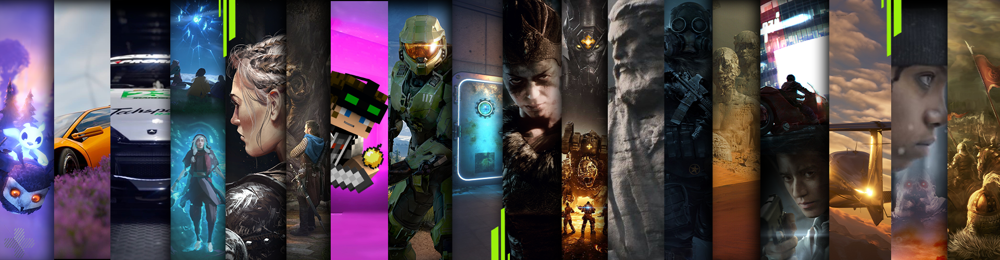
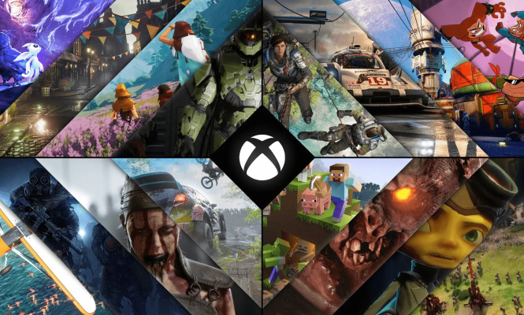
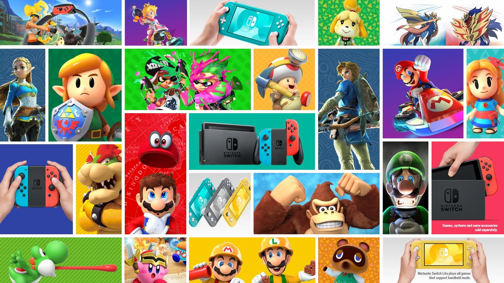
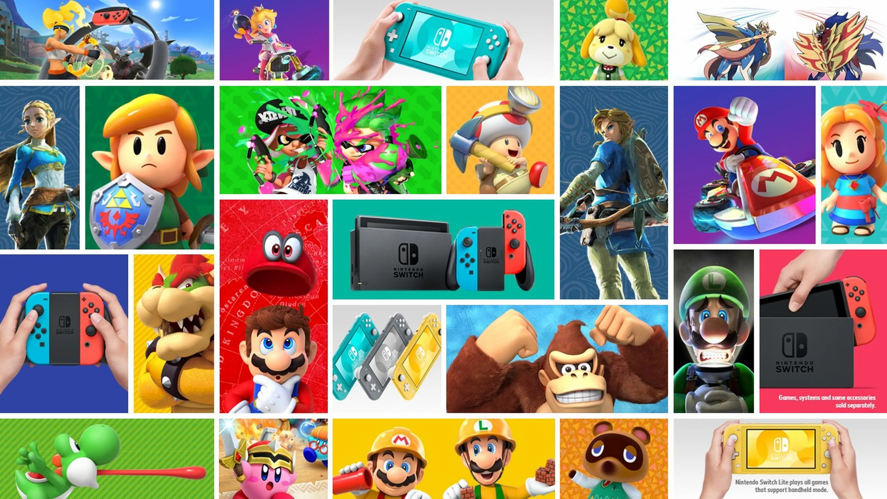
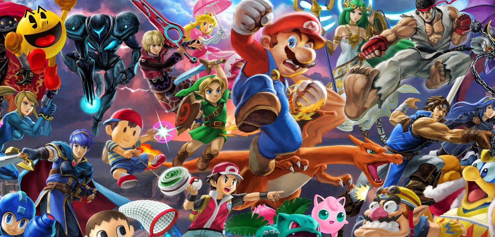
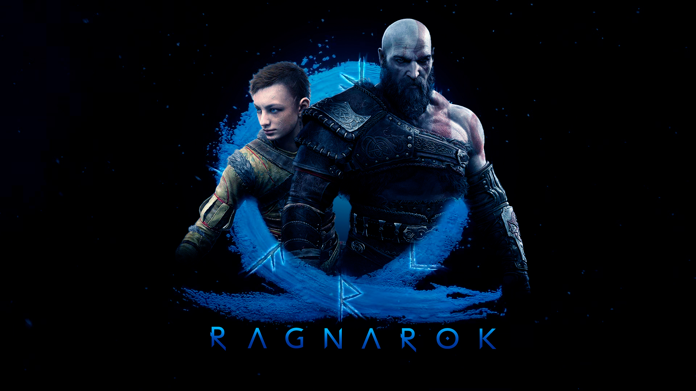
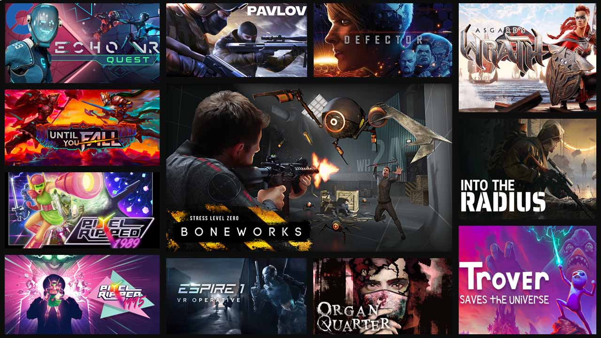
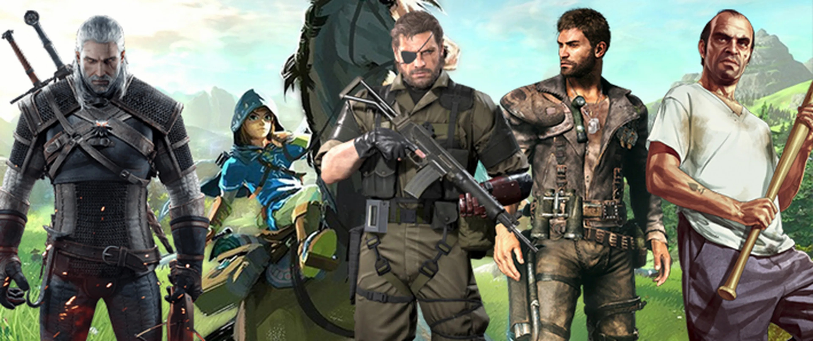
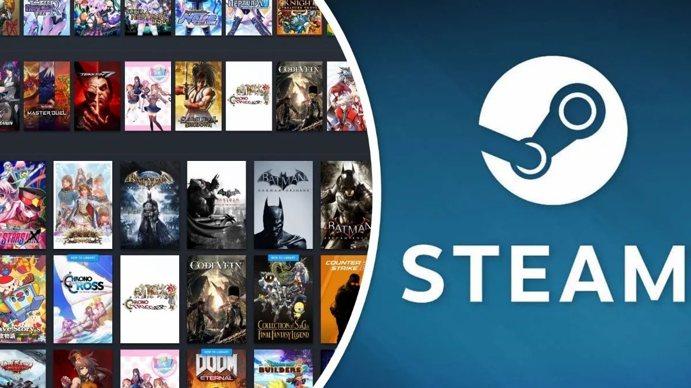

XBOX
La historia de Xbox se puede resumir de la siguiente manera: La primera Xbox fue la primera consola de videojuegos de Microsoft y salió a la venta en 2001. La Xbox fue diseñada para competir con la PlayStation 2 de Sony y la Nintendo GameCube. El título de lanzamiento de Xbox fue Halo: Combat Evolved, que fue el éxito que la consola necesitaba para hacerse un lugar en el mercado. La segunda consola de Microsoft fue la Xbox 360, que se lanzó en 2005 y se convirtió en la consola Xbox más vendida, con más de 84 millones de unidades vendidas. La Xbox One fue la tercera generación de consolas de Microsoft y se lanzó en 2013. Microsoft anunció en 2022 que descontinuaba todos los modelos de la Xbox One a nivel internacional. La Xbox Series X/S fue lanzada en 2020 y hasta la fecha ha vendido más de 20 millones de consolas. En total, ha habido nueve consolas Xbox en cuatro generaciones distintas.
Ver másGAME PASS
Xbox Game Pass es un servicio de suscripción de videojuegos lanzado por Microsoft en 2017, diseñado para ofrecer a los jugadores acceso a una amplia biblioteca de juegos por una tarifa mensual. La idea detrás de Game Pass era similar a los servicios de streaming de video como Netflix,...
Ver más 

Reseña
Nintendo es una de las compañías más icónicas y longevas en la industria de los videojuegos, fundada en 1889 como una empresa de naipes en Kioto, Japón. Tras varias décadas dedicadas a diferentes tipos de entretenimiento, incluyendo juguetes electrónicos, Nintendo entró en el mundo de los videojuegos a finales de los años 70 y principios de los 80. Su primera consola de gran éxito fue la Nintendo Entertainment System (NES), lanzada en 1983 en Japón y 1985 en América. Esta consola revolucionó la industria de los videojuegos tras la crisis de 1983, con franquicias legendarias como Super Mario Bros. y The Legend of Zelda...
Ver másPrincipales Juegos
Super Mario
Juego destacado: Super Mario Odyssey (2017) Descripción: Mario es sin duda el personaje más emblemático de Nintendo y uno de los más reconocidos en el mundo de los videojuegos. Desde su debut en Super Mario Bros. (1985), la serie ha sido sinónimo de plataformas innovadoras y diversión atemporal. Los juegos de Mario han sido clave en casi todas las consolas de Nintendo, y cada nuevo título principal empuja los límites del género de plataformas.
Legend of Zelda
Juego destacado: The Legend of Zelda: Breath of the Wild (2017) Descripción: Esta saga de aventuras ha sido un pilar en la historia de Nintendo. The Legend of Zelda se caracteriza por su enfoque en la exploración, resolución de acertijos y batallas épicas. Breath of the Wild, en particular, redefinió el concepto de mundo abierto y se considera uno de los mejores videojuegos de todos los tiempos...
Ver másPlayStation

Reseña
PlayStation, la emblemática consola de Sony, irrumpió en el mundo de los videojuegos en 1994 y cambió para siempre la manera en que la industria entendía el entretenimiento digital. Lo que comenzó como una colaboración fallida entre Sony y Nintendo terminó dando vida a una de las franquicias más exitosas del gaming. Con su enfoque en gráficos 3D avanzados para la época y su uso de discos compactos en lugar de cartuchos, la PlayStation original se destacó inmediatamente. Juegos como Final Fantasy VII, Metal Gear Solid y Crash Bandicoot definieron una era, elevando la calidad narrativa y cinematográfica de los videojuegos, consolidando a PlayStation como una marca para jugadores más maduros.
Ver másSus Mejores Titulos!
The Last of Us Plataformas: PlayStation 3, PlayStation 4, PlayStation 5 (remasterizado) Descripción: The Last of Us es una obra maestra de la narrativa en videojuegos, desarrollada por Naughty Dog. Ambientado en un mundo postapocalíptico, sigue la emotiva historia de Joel y Ellie mientras sobreviven a horrores tanto humanos como infectados. Su secuela, The Last of Us Part II, también ha sido ampliamente elogiada, ganando múltiples premios por su historia madura y jugabilidad. God of War (2018)
Plataformas: PlayStation 4, PlayStation 5 Descripción: Kratos, el espartano furioso, regresó en 2018 en una nueva dirección para la serie. Este título reinventó la franquicia con un enfoque más profundo en la narrativa y el desarrollo de personajes, mientras introducía a su hijo, Atreus, en una historia ambientada en la mitología nórdica. La jugabilidad, las impresionantes visuales y la emotiva trama lo convirtieron en uno de los mejores juegos de la generación.
Ver másSteam y Pc
La historia de los juegos de PC se remonta a la década de 1970, cuando los primeros sistemas informáticos comenzaron a ser accesibles al público. Uno de los primeros juegos de computadora fue *Pong*, desarrollado por Atari en 1972, pero fue el lanzamiento de *Adventure* en 1976 para la consola Atari 2600 y el juego de texto *Zork* en 1980 lo que sentó las bases de lo que serían los juegos de aventura en la computadora. Durante los años 80, los sistemas como el IBM PC y la Commodore 64 se convirtieron en plataformas populares, y el mercado de los videojuegos comenzó a expandirse con la aparición de géneros como plataformas, shooters y juegos de estrategia.
Ver másPc Gamer
Con la llegada de los 90, los juegos de PC experimentaron un gran avance técnico, gracias al aumento de la potencia de procesamiento y los gráficos en 3D. Títulos icónicos como *Doom* (1993) y *Warcraft: Orcs & Humans* (1994) no solo definieron sus respectivos géneros, sino que también popularizaron el juego en red a través de LAN y posteriormente por Internet. Durante esta época, el género de los juegos de rol (RPG) también comenzó a ganar popularidad, con títulos como *Baldur's Gate* (1998) que ofrecieron experiencias narrativas profundas y opciones de personalización de personajes.
Ver másMejores Juegos
Warcraft / Dota / CSGO
A partir de 2000, los juegos de PC se diversificaron aún más, con la aparición de plataformas de distribución digital como Steam en 2003, que facilitó el acceso a una amplia biblioteca de juegos. Los juegos multijugador masivos en línea (MMO), como *World of Warcraft* (2004), también revolucionaron...
Ver más